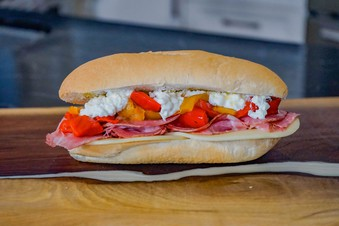

Capocollo and Vinegar Peppers Sandwich

Classic italian-style sub sandwich
The capocollo sandwich traces its roots to Italian immigrants in the U.S., it became a staple in cities like New Orleans and Baltimore, often served on crusty bread with Creole mustard or remoulade.
Vinegar peppers
- 4 yellow, red or orange bell peppers
- 1 cup water
- 1/2 cup distilled white vinegar
- 1/4 cup white sugar
- 1 tablespoon salt
- 6 garlic gloves, roughly chopped
Sandwich assembly
- 1 six-inch length of italian bread (or ciabatta)
- olive oil to taste
- 3 to 4 ounces sliced capocollo
- 1 to 2 slices of provolone
- vinegar peppers (from above)
- vinegar pepper liquid (from above)
- Oven roasted peppers: preheat your oven to 450 degrees F (230 C).
- Cut your red bell peppers down the center into two halves and remove the stem and all the seeds. With a small knife, remove as much of the white membrane on the inside of the pepper as you can.
- Place your pepper halves face down on an aluminum foil-lined sheet pan.
- Bake for 20 to 25 minutes or until the skins of the peppers are turning fairly black.
- Remove your peppers from the oven and transfer into a bowl large enough to hold all of them. At this point, you want to steam them slightly to make the skins easier to remove. You can either cover your bowl with another inverted bowl or you can cover your bowl with something like plastic wrap. Covering a bowl with a cutting board will also work. You're just trying to trap the stem in with the roasted peppers.
- After about 5 or 10 minutes your peppers should be cool enough to handle.
- Remove from the bowl to a cutting board and carefully strip off all the skins and the burned or charred bits of pepper skin or flesh. Using a paper towel may help you peel the skin more easily because it will help you get a better grip on the slightly damp skin. Discard all the burned parts and the skin.
- Slice your roasted peppers into slices or large pieces depending on what sort of application you want to use them on. I like to slice in long strips and then cut those strips in half.
- Boiling brine: add water, vinegar, sugar, and salt into a medium pot over medium heat.
- Stir the brine occasionally until it starts to boil. Allow it to boil for 1 or 2 minutes or until all of the salt and sugar have dissolved and are no longer visible. Remove the pot from the heat.
- Add everything to the jar: add all of the softened, roasted, and sliced peppers to a large jar with 6 chopped up cloves of garlic.
- Pour the boiling brine into the jar with the peppers and garlic. Make sure the peppers are fully covered. Seal the jar and allow it to cool before storing in your fridge for up to a month.
- Sandwich assembly: slice a six-inch roll and add a drizzle of olive oil to the bottom.
- Top the olive oil with piled-up capocollo. Try not to just lay the meat flat. Fold it over or drape it for best results. Break the provolone slices in half and shingle them over the meat.
- Add as many vinegar peppers as you would like and spoon a bit of the pickled pepper liquid over the inside of the top of the sandwich roll to add a bit more flavor. Close the sandwich and wrap it tightly in parchment paper before serving.
Home